Slide ↕ or Jump to:
Start
Prophet Ibrahim
Prophet Musa
Prophet Muhammad
🚀 TimeLine of Prophets
TimeLine Of Only 25 Prophets who have been explicitly named in The Islamic Holy Book Quran
Chronology years of Prophets are found by historical researches and have no religious connection
XXXX BC Prophet Adam
GOD created the first Human being. Initially He was Kept comfortably in Paradize, then desended to Earth for struggling and starting Human life.
Photograph By Photo by W.carter , CC BY-SA 4.0 , via Wikimedia Commons
XXXX BC Prophet Idrees
Born in mesopotamian vicinity, Preached his people, he was the first man who took up arms in the name of GOD against the transgressors of his time.
Photograph By Véronique PAGNIER , CC BY-SA 3.0 , via Wikimedia Commons
2948 BC Prophet Noah
Born in or around Mesopotamia, preached for centuries, built an Ark upon GOD instruction. Only Those who boarded Ark could survive a universal flood.
Photograph By Tim HD from Pixabay
2700-2400 BC Prophet Hud
Born in southern Arabia in a Tribe Aad, preached his people against arrogancy, pride and idol worship. His whole tribe was ultimately vanished by GOD.
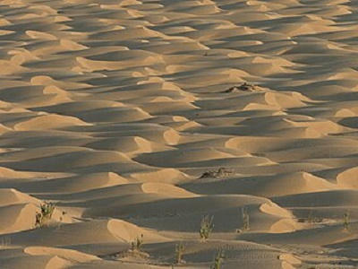
Photograph By Ulf Rydin , CC BY-SA 4.0 , via Wikimedia Commons
2700-2300 BC Prophet Saleh
Born in North-Western Arabia in Tribe Thamud, preached his people against overspending, pride and crulety. His tribe was ultimately vanished by GOD.
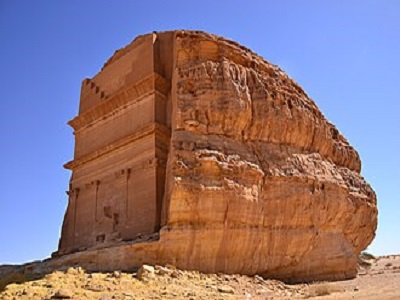
Photograph By Sammy Six , CC BY 2.0 , via Wikimedia Commons
2000 BC Prophet Ibrahim
Was thrown in fire by King Namrud in the city of Ur Mesapotamia, when he defied his claim of being GOD.
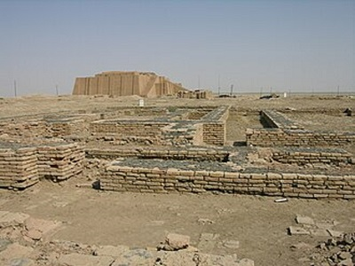
Photograph By M.Lubinski from Iraq,USA. , CC BY-SA 2.0 , via Wikimedia Commons
2000 BC Prophet Lut
born in Ur, migrated to Canaan with Prophet Ibrahim who stationed him in Sodom and Gomorrah cities, which were later ultimately destroyed by GOD.
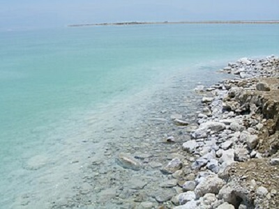
Photograph By xta11 , CC BY-SA 4.0 , via Wikimedia Commons
1900 BC Prophet Ismael
Born in Cannan. His father Prophet Ibrahim left him & his mother alone in the desert of Arabia, his father built Kaaba with him and offered his sacrifice.
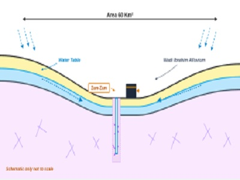
Photograph By SPQR10 , CC0, via Wikimedia Commons
1900 BC Prophet Isaac
He was stationed in Hebron by his father Prophet Ibrahim, to continue preaching people in the city. He made many places in Hebron to worship GOD.
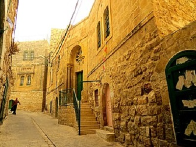
Photograph By بدارين , CC BY-SA 4.0 , via Wikimedia Commons
1800 BC Prophet Yaqoob.
Son and grandson of Prophets. His patience & devotion kept him calm and thankful to GOD even when told that his son has been eaten by a wolf.
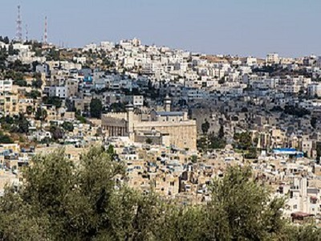
Photograph By Oren Rozen , CC BY-SA 4.0 , via Wikimedia Commons
1700 BC Prophet Yousuf
Son of Prophet Yaqoob, betrayed by his own brothers, but GOD uplifted him from being a slave to ruler. He shifted Bani Israeel from Cannan to Egypt.
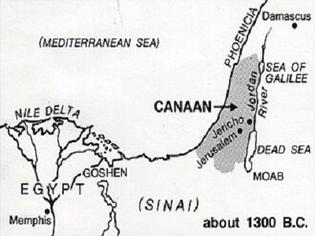
Photograph By Pearson Scott Foresman , Public domain, via Wikimedia Commons
1500 BC Shu’ayb
Born in Madyan (North of Arabia), Preached and changed people who were not only disbelivers but also habitual dishonest and oppressors.
Photograph By بندر الحويفي , CC BY-SA 3.0 , via Wikimedia Commons
1500 BC Ayyub
He was a very prosperus man in north east of Arabia, he once lost every thingh including health, but remained thankful to GOD in worst situations.
Photograph By See page for author , CC0, via Wikimedia Commons
1300 BC Prophet Musa
was saved by GOD when Pharaoh was slaughtering Bani Israeel infants, got them escaped back to Cannan through 40 years wandering in sinai desert.
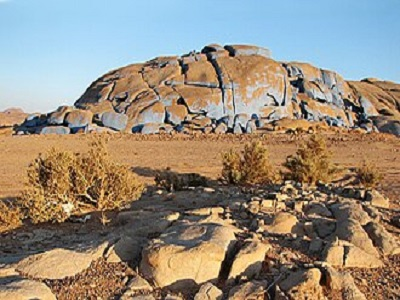
Photograph By Ibrahim.ID , CC BY-SA 4.0 , via Wikimedia Commons
1300 BC Prophet Haroon
He kept on standing firm with his brother prophet Musa in preaching and fighting Pharaoh and kept on guiding Bani Israeel in his absence.
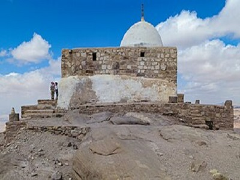
Photograph By Joneikifi , CC BY-SA 3.0 , via Wikimedia Commons
970 BC Prophet Sulaiman
Son of Prophet Dawud. He always remained obidient, thankful to GOD who gave him miraculous abilities to command wind & jinns, speak to animals.
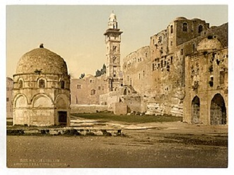
Photograph By See page for author , Public domain, via Wikimedia Commons
900 BC Prophet Ilyas
He was sent to preach people of Baalbek (present-day Lebanon) who had started worshiping Idols. He stood against Israleies kings also risking life.
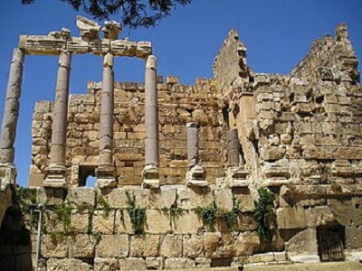
Photograph By Heretiq , CC BY-SA 2.5 , via Wikimedia Commons
850 BC Prophet Al-Yasa
Was sent to preach after Prophet Ilyas and continued teaching to worship one GOD instead several idols, He was burried in Dyiar Bakr Turkey.
Photograph By R Prazeres , CC BY-SA 4.0 , via Wikimedia Commons
800 BC Prophet Younus
Was sent to preache people of Nineveh- Mesopotamia. He was swallowed by a fish which finally threw him out on ground after he repented to GOD.
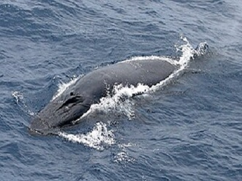
Photograph By Sophie Webb , Public domain, via Wikimedia Commons
800 BC Prophet Dhul-Kifl
He is remmebered for his patience, devotion, just character, and fulfilling responsibilities. a tomb in Diyar bakir, Turkey is famous as his resting place,
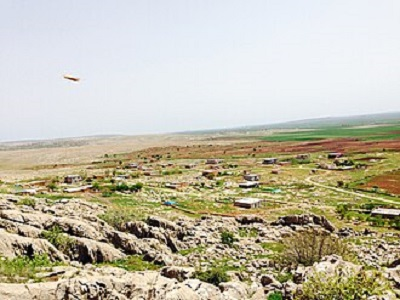
Photograph By Abbasturhan , Public domain, via Wikimedia Commons
097 BC Prophet Zakariya
Born in Palestine, father of another great Prophet Yahya, served in the Second Temple in Jerusalem, was killed by bani Israel and Roman soldiers .
Photograph By Toushiro , Public domain, via Wikimedia Commons
001 BC Prophet Yahya.
Born six months after birth of Prophet Isa, was uniquely named by Allah, his head was cut upon the wish of a dancer of the ruler in Galilee jerusalem.
Photograph By Mujaddara , CC BY-SA 3.0 , via Wikimedia Commons
001 BC Prophet Isa
Īsā ibn Maryam is one of the greatest prophets. performed miracles by GOD’s permission and continously preached Bani Israeel against all odds.
Photograph By Wayne McLean (Jgritz) , CC BY 2.0 , via Wikimedia Commons
570 CE Prophet Mohammad
The Last Messenger, born in Macca. his teachings and actions form the foundation of Islam. He and his followers changed the world in just 40 years.
Photograph By Photographes du National Geographic , Public domain, via Wikimedia Commons


.jpg){kind=link}


.jpg){kind=link}


.jpg){kind=link}